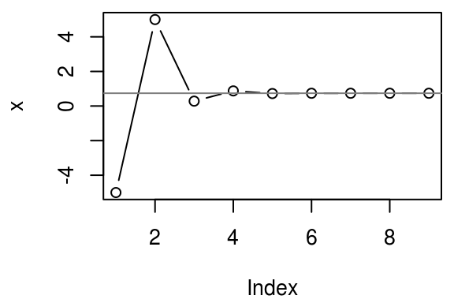
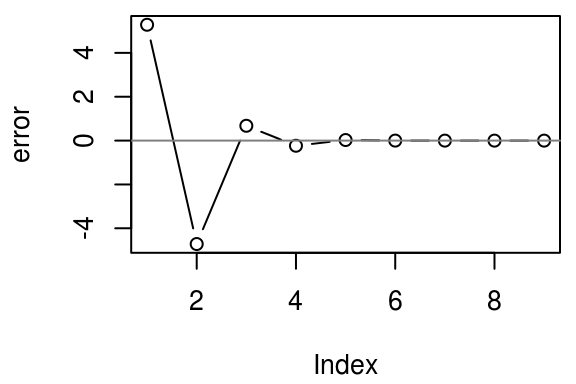

Function operators
In this chapter, you’ll learn about function operators (FOs). A function operator is a function that takes one (or more) functions as input and returns a function as output. In some ways, function operators are similar to functionals: there’s nothing you can’t do without them, but they can make your code more readable and expressive, and they can help you write code faster. The main difference is that functionals extract common patterns of loop use, where function operators extract common patterns of anonymous function use.
The following code shows a simple function operator, chatty(). It wraps a function, making a new function that prints out its first argument. It’s useful because it gives you a window to see how functionals, like vapply(), work.
chatty <- function(f) {
function(x, ...) {
res <- f(x, ...)
cat("Processing ", x, "\n", sep = "")
res
}
}
f <- function(x) x ^ 2
s <- c(3, 2, 1)
chatty(f)(1)
#> Processing 1
#> [1] 1
vapply(s, chatty(f), numeric(1))
#> Processing 3
#> Processing 2
#> Processing 1
#> [1] 9 4 1In the last chapter, we saw that many built-in functionals, like Reduce(), Filter(), and Map(), have very few arguments, so we had to use anonymous functions to modify how they worked. In this chapter, we’ll build specialised substitutes for common anonymous functions that allow us to communicate our intent more clearly. For example, in multiple inputs we used an anonymous function with Map() to supply fixed arguments:
Map(function(x, y) f(x, y, zs), xs, ys)Later in this chapter, we’ll learn about partial application using the partial() function. Partial application encapsulates the use of an anonymous function to supply default arguments, and allows us to write succinct code:
Map(partial(f, zs = zs), xs, yz)This is an important use of FOs: by transforming the input function, you eliminate parameters from a functional. In fact, as long as the inputs and outputs of the function remain the same, this approach allows your functionals to be more extensible, often in ways you haven’t thought of.
The chapter covers four important types of FO: behaviour, input, output, and combining. For each type, I’ll show you some useful FOs, and how you can use as another to decompose problems: as combinations of multiple functions instead of combinations of arguments. The goal is not to exhaustively list every possible FO, but to show a selection that demonstrate how they work together with other FP techniques. For your own work, you’ll need to think about and experiment with how function operators can help you solve recurring problems.
Outline
Behavioural FOs introduces you to FOs that change the behaviour of a function like automatically logging usage to disk or ensuring that a function is run only once.
Output FOs shows you how to write FOs that manipulate the output of a function. These can do simple things like capturing errors, or fundamentally change what the function does.
Input FOs describes how to modify the inputs to a function using a FO like
Vectorize()orpartial().Combining FOs shows the power of FOs that combine multiple functions with function composition and logical operations.
Prerequisites
As well as writing FOs from scratch, this chapter uses function operators from the memoise, plyr, and pryr packages. Install them by running install.packages(c("memoise", "plyr", "pryr")).
Behavioural FOs
Behavioural FOs leave the inputs and outputs of a function unchanged, but add some extra behaviour. In this section, we’ll look at functions which implement three useful behaviours:
- Add a delay to avoid swamping a server with requests.
- Print to console every n invocations to check on a long running process.
- Cache previous computations to improve performance.
To motivate these behaviours, imagine we want to download a long vector of URLs. That’s pretty simple with lapply() and download_file():
download_file <- function(url, ...) {
download.file(url, basename(url), ...)
}
lapply(urls, download_file)(download_file() is a simple wrapper around utils::download.file() which provides a reasonable default for the file name.)
There are a number of useful behaviours we might want to add to this function. If the list was long, we might want to print a . every ten URLs so we know that the function’s still working. If we’re downloading files over the internet, we might want to add a small delay between each request to avoid hammering the server. Implementing these behaviours in a for loop is rather complicated. We can no longer use lapply() because we need an external counter:
i <- 1
for(url in urls) {
i <- i + 1
if (i %% 10 == 0) cat(".")
Sys.delay(1)
download_file(url)
}Understanding this code is hard because different concerns (iteration, printing, and downloading) are interleaved. In the remainder of this section we’ll create FOs that encapsulate each behaviour and allow us to write code like this:
lapply(urls, dot_every(10, delay_by(1, download_file)))Implementing delay_by() is straightforward, and follows the same basic template that we’ll see for the majority of FOs in this chapter:
delay_by <- function(delay, f) {
function(...) {
Sys.sleep(delay)
f(...)
}
}
system.time(runif(100))
#> user system elapsed
#> 0 0 0
system.time(delay_by(0.1, runif)(100))
#> user system elapsed
#> 0.001 0.000 0.100dot_every() is a little bit more complicated because it needs to manage a counter. Fortunately, we saw how to do that in mutable state.
dot_every <- function(n, f) {
i <- 1
function(...) {
if (i %% n == 0) cat(".")
i <<- i + 1
f(...)
}
}
x <- lapply(1:100, runif)
x <- lapply(1:100, dot_every(10, runif))
#> ..........Notice that I’ve made the function the last argument in each FO. This makes it easier to read when we compose multiple function operators. If the function were the first argument, then instead of:
download <- dot_every(10, delay_by(1, download_file))we’d have
download <- dot_every(delay_by(download_file, 1), 10)That’s harder to follow because (e.g.) the argument of dot_every() is far away from its call. This is sometimes called the Dagwood sandwich problem: you have too much filling (too many long arguments) between your slices of bread (parentheses).
I’ve also tried to give the FOs descriptive names: delay by 1 (second), (print a) dot every 10 (invocations). The more clearly the function names used in your code express your intent, the easier it will be for others (including future you) to read and understand the code.
Memoisation
Another thing you might worry about when downloading multiple files is accidentally downloading the same file multiple times. You could avoid this by calling unique() on the list of input URLs, or manually managing a data structure that mapped the URL to the result. An alternative approach is to use memoisation: modify a function to automatically cache its results.
library(memoise)slow_function <- function(x) {
Sys.sleep(1)
10
}
system.time(slow_function())
#> user system elapsed
#> 0.001 0.000 1.001
system.time(slow_function())
#> user system elapsed
#> 0.000 0.000 1.001
fast_function <- memoise(slow_function)
system.time(fast_function())
#> user system elapsed
#> 0.001 0.000 1.001
system.time(fast_function())
#> user system elapsed
#> 0 0 0Memoisation is an example of the classic computer science tradeoff of memory versus speed. A memoised function can run much faster because it stores all of the previous inputs and outputs, using more memory.
A realistic use of memoisation is computing the Fibonacci series. The Fibonacci series is defined recursively: the first two values are 1 and 1, then f(n) = f(n - 1) + f(n - 2). A naive version implemented in R would be very slow because, for example, fib(10) computes fib(9) and fib(8), and fib(9) computes fib(8) and fib(7), and so on. As a result, the value for each value in the series gets computed many, many times. Memoising fib() makes the implementation much faster because each value is computed only once.
fib <- function(n) {
if (n < 2) return(1)
fib(n - 2) + fib(n - 1)
}
system.time(fib(23))
#> user system elapsed
#> 0.120 0.003 0.125
system.time(fib(24))
#> user system elapsed
#> 0.180 0.001 0.183
fib2 <- memoise(function(n) {
if (n < 2) return(1)
fib2(n - 2) + fib2(n - 1)
})
system.time(fib2(23))
#> user system elapsed
#> 0.003 0.001 0.004
system.time(fib2(24))
#> user system elapsed
#> 0 0 0It doesn’t make sense to memoise all functions. For example, a memoised random number generator is no longer random:
runifm <- memoise(runif)
runifm(5)
#> [1] 0.02456588 0.92663087 0.26794819 0.97268772 0.62376106
runifm(5)
#> [1] 0.02456588 0.92663087 0.26794819 0.97268772 0.62376106Once we understand memoise(), it’s straightforward to apply to our problem:
download <- dot_every(10, memoise(delay_by(1, download_file)))This gives a function that we can easily use with lapply(). However, if something goes wrong with the loop inside lapply(), it can be difficult to tell what’s going on. The next section will show how we can use FOs to pull back the curtain and look inside.
Capturing function invocations
One challenge with functionals is that it can be hard to see what’s going on inside of them. It’s not easy to pry open their internals like it is with a for loop. Fortunately we can use FOs to peer behind the curtain with tee().
tee(), defined below, has three arguments, all functions: f, the function to modify; on_input, a function that’s called with the inputs to f; and on_output, a function that’s called with the output from f.
ignore <- function(...) NULL
tee <- function(f, on_input = ignore, on_output = ignore) {
function(...) {
on_input(...)
output <- f(...)
on_output(output)
output
}
}(The function is inspired by the unix shell command tee, which is used to split up streams of file operations so that you can both display what’s happening and save intermediate results to a file.)
We can use tee() to look inside the uniroot() functional, and see how it iterates its way to a solution. The following example finds where x and cos(x) intersect:
g <- function(x) cos(x) - x
zero <- uniroot(g, c(-5, 5))
show_x <- function(x, ...) cat(sprintf("%+.08f", x), "\n")
# The location where the function is evaluated:
zero <- uniroot(tee(g, on_input = show_x), c(-5, 5))
#> -5.00000000
#> +5.00000000
#> +0.28366219
#> +0.87520341
#> +0.72298040
#> +0.73863091
#> +0.73908529
#> +0.73902425
#> +0.73908529
# The value of the function:
zero <- uniroot(tee(g, on_output = show_x), c(-5, 5))
#> +5.28366219
#> -4.71633781
#> +0.67637474
#> -0.23436269
#> +0.02685676
#> +0.00076012
#> -0.00000026
#> +0.00010189
#> -0.00000026cat() allows us to see what’s happening as the function runs, but it doesn’t give us a way to work with the values after the function as completed. To do that, we could capture the sequence of calls by creating a function, remember(), that records every argument called and retrieves them when coerced into a list. The small amount of S3 code needed is explained in S3.
remember <- function() {
memory <- list()
f <- function(...) {
# This is inefficient!
memory <<- append(memory, list(...))
invisible()
}
structure(f, class = "remember")
}
as.list.remember <- function(x, ...) {
environment(x)$memory
}
print.remember <- function(x, ...) {
cat("Remembering...\n")
str(as.list(x))
}Now we can draw a picture showing how uniroot zeroes in on the final answer:
locs <- remember()
vals <- remember()
zero <- uniroot(tee(g, locs, vals), c(-5, 5))
x <- unlist(as.list(locs))
error <- unlist(as.list(vals))
plot(x, type = "b"); abline(h = 0.739, col = "grey50")
plot(error, type = "b"); abline(h = 0, col = "grey50")
Laziness
The function operators we’ve seen so far follow a common pattern:
funop <- function(f, otherargs) {
function(...) {
# maybe do something
res <- f(...)
# maybe do something else
res
}
}Unfortunately there’s a problem with this implementation because function arguments are lazily evaluated: f() may have changed between applying the FO and evaluating the function. This is a particular problem if you’re using a for loop or lapply() to apply multiple function operators. In the following example, we take a list of functions and delay each one. But when we try to evaluate the mean, we get the sum instead.
funs <- list(mean = mean, sum = sum)
funs_m <- lapply(funs, delay_by, delay = 0.1)
funs_m$mean(1:10)
#> [1] 55We can avoid that problem by explicitly forcing the evaluation of f():
delay_by <- function(delay, f) {
force(f)
function(...) {
Sys.sleep(delay)
f(...)
}
}
funs_m <- lapply(funs, delay_by, delay = 0.1)
funs_m$mean(1:10)
#> [1] 5.5It’s good practice to do that whenever you create a new FO.
Exercises
Write a FO that logs a time stamp and message to a file every time a function is run.
What does the following function do? What would be a good name for it?
f <- function(g) { force(g) result <- NULL function(...) { if (is.null(result)) { result <<- g(...) } result } } runif2 <- f(runif) runif2(5) #> [1] 0.9134312 0.3984839 0.8849056 0.6958965 0.4592552 runif2(10) #> [1] 0.9134312 0.3984839 0.8849056 0.6958965 0.4592552Modify
delay_by()so that instead of delaying by a fixed amount of time, it ensures that a certain amount of time has elapsed since the function was last called. That is, if you calledg <- delay_by(1, f); g(); Sys.sleep(2); g()there shouldn’t be an extra delay.Write
wait_until()which delays execution until a specific time.There are three places we could have added a memoise call: why did we choose the one we did?
download <- memoise(dot_every(10, delay_by(1, download_file))) download <- dot_every(10, memoise(delay_by(1, download_file))) download <- dot_every(10, delay_by(1, memoise(download_file)))Why is the
remember()function inefficient? How could you implement it in more efficient way?Why does the following code, from stackoverflow, not do what you expect?
# return a linear function with slope a and intercept b. f <- function(a, b) function(x) a * x + b # create a list of functions with different parameters. fs <- Map(f, a = c(0, 1), b = c(0, 1)) fs[[1]](3) #> [1] 4 # should return 0 * 3 + 0 = 0How can you modify
fso that it works correctly?
Output FOs
The next step up in complexity is to modify the output of a function. This could be quite simple, or it could fundamentally change the operation of the function by returning something completely different to its usual output. In this section you’ll learn about two simple modifications, Negate() and failwith(), and two fundamental modifications, capture_it() and time_it().
Minor modifications
base::Negate() and plyr::failwith() offer two minor, but useful, modifications of a function that are particularly handy in conjunction with functionals.
Negate() takes a function that returns a logical vector (a predicate function), and returns the negation of that function. This can be a useful shortcut when a function returns the opposite of what you need. The essence of Negate() is very simple:
Negate <- function(f) {
force(f)
function(...) !f(...)
}
(Negate(is.null))(NULL)
#> [1] FALSEI often use this idea to make a function, compact(), that removes all null elements from a list:
compact <- function(x) Filter(Negate(is.null), x)plyr::failwith() turns a function that throws an error into a function that returns a default value when there’s an error. Again, the essence of failwith() is simple; it’s just a wrapper around try(), the function that captures errors and allows execution to continue.
failwith <- function(default = NULL, f, quiet = FALSE) {
force(f)
function(...) {
out <- default
try(out <- f(...), silent = quiet)
out
}
}
log("a")
#> Error in log("a"): non-numeric argument to mathematical function
failwith(NA, log)("a")
#> [1] NA
failwith(NA, log, quiet = TRUE)("a")
#> [1] NA(If you haven’t seen try() before, it’s discussed in more detail in exceptions and debugging.)
failwith() is very useful in conjunction with functionals: instead of the failure propagating and terminating the higher-level loop, you can complete the iteration and then find out what went wrong. For example, imagine you’re fitting a set of generalised linear models (GLMs) to a list of data frames. While GLMs can sometimes fail because of optimisation problems, you’d still want to be able to try to fit all the models, and later look back at those that failed:
# If any model fails, all models fail to fit:
models <- lapply(datasets, glm, formula = y ~ x1 + x2 * x3)
# If a model fails, it will get a NULL value
models <- lapply(datasets, failwith(NULL, glm),
formula = y ~ x1 + x2 * x3)
# remove failed models (NULLs) with compact
ok_models <- compact(models)
# extract the datasets corresponding to failed models
failed_data <- datasets[vapply(models, is.null, logical(1))]I think this is a great example of the power of combining functionals and function operators: it lets you succinctly express what you need to solve a common data analysis problem.
Changing what a function does
Other output function operators can have a more profound effect on the operation of the function. Instead of returning the original return value, we can return some other effect of the function evaluation. Here are two examples:
Return text that the function
print()ed:capture_it <- function(f) { force(f) function(...) { capture.output(f(...)) } } str_out <- capture_it(str) str(1:10) #> int [1:10] 1 2 3 4 5 6 7 8 9 10 str_out(1:10) #> [1] " int [1:10] 1 2 3 4 5 6 7 8 9 10"Return how long a function took to run:
time_it <- function(f) { force(f) function(...) { system.time(f(...)) } }
time_it() allows us to rewrite some of the code from the functionals chapter:
compute_mean <- list(
base = function(x) mean(x),
sum = function(x) sum(x) / length(x)
)
x <- runif(1e6)
# Previously we used an anonymous function to time execution:
# lapply(compute_mean, function(f) system.time(f(x)))
# Now we can compose function operators:
call_fun <- function(f, ...) f(...)
lapply(compute_mean, time_it(call_fun), x)
#> $base
#> user system elapsed
#> 0.005 0.000 0.005
#>
#> $sum
#> user system elapsed
#> 0.003 0.000 0.003In this example, there’s not a huge benefit to using function operators, because the composition is simple and we’re applying the same operator to each function. Generally, using function operators is most effective when you are using multiple operators or if the gap between creating them and using them is large.
Exercises
Create a
negative()FO that flips the sign of the output of the function to which it is applied.The
evaluatepackage makes it easy to capture all the outputs (results, text, messages, warnings, errors, and plots) from an expression. Create a function likecapture_it()that also captures the warnings and errors generated by a function.Create a FO that tracks files created or deleted in the working directory (Hint: use
dir()andsetdiff().) What other global effects of functions might you want to track?
Input FOs
The next step up in complexity is to modify the inputs of a function. Again, you can modify how a function works in a minor way (e.g., setting default argument values), or in a major way (e.g., converting inputs from scalars to vectors, or vectors to matrices).
Prefilling function arguments: partial function application
A common use of anonymous functions is to make a variant of a function that has certain arguments “filled in” already. This is called “partial function application”, and is implemented by pryr::partial(). Once you have read metaprogramming, I encourage you to read the source code for partial() and figure out how it works — it’s only 5 lines of code!
partial() allows us to replace code like
f <- function(a) g(a, b = 1)
compact <- function(x) Filter(Negate(is.null), x)
Map(function(x, y) f(x, y, zs), xs, ys)with
f <- partial(g, b = 1)
compact <- partial(Filter, Negate(is.null))
Map(partial(f, zs = zs), xs, ys)We can use this idea to simplify the code used when working with lists of functions. Instead of:
funs2 <- list(
sum = function(...) sum(..., na.rm = TRUE),
mean = function(...) mean(..., na.rm = TRUE),
median = function(...) median(..., na.rm = TRUE)
)we can write:
library(pryr)
funs2 <- list(
sum = partial(sum, na.rm = TRUE),
mean = partial(mean, na.rm = TRUE),
median = partial(median, na.rm = TRUE)
)Using partial function application is a straightforward task in many functional programming languages, but it’s not entirely clear how it should interact with R’s lazy evaluation rules. The approach plyr::partial() takes is to create a function that is as similar as possible to the anonymous function that you’d create by hand. Peter Meilstrup takes a different approach in his ptools package. If you’re interested in the topic, you might want to read about the binary operators he created: %()%, %>>%, and %<<%.
Changing input types
It’s also possible to make a major change to a function’s input, making a function work with fundamentally different types of data. There are a few existing functions that work along these lines:
base::Vectorize()converts a scalar function to a vector function. It takes a non-vectorised function and vectorises it with respect to the arguments specified in thevectorize.argsargument. This doesn’t give you any magical performance improvements, but it’s useful if you want a quick and dirty way of making a vectorised function.A mildly useful extension to
sample()would be to vectorize it with respect to size. Doing so would allow you to generate multiple samples in one call.sample2 <- Vectorize(sample, "size", SIMPLIFY = FALSE) str(sample2(1:5, c(1, 1, 3))) #> List of 3 #> $ : int 2 #> $ : int 5 #> $ : int [1:3] 5 3 2 str(sample2(1:5, 5:3)) #> List of 3 #> $ : int [1:5] 1 3 4 5 2 #> $ : int [1:4] 4 5 1 3 #> $ : int [1:3] 3 5 1In this example we have used
SIMPLIFY = FALSEto ensure that our newly vectorised function always returns a list. This is usually what you want.splat()converts a function that takes multiple arguments to a function that takes a single list of arguments.splat <- function (f) { force(f) function(args) { do.call(f, args) } }This is useful if you want to invoke a function with varying arguments:
x <- c(NA, runif(100), 1000) args <- list( list(x), list(x, na.rm = TRUE), list(x, na.rm = TRUE, trim = 0.1) ) lapply(args, splat(mean)) #> [[1]] #> [1] NA #> #> [[2]] #> [1] 10.36643 #> #> [[3]] #> [1] 0.4704079plyr::colwise()converts a vector function to one that works with data frames:median(mtcars) #> Error in median.default(mtcars): need numeric data median(mtcars$mpg) #> [1] 19.2 plyr::colwise(median)(mtcars) #> mpg cyl disp hp drat wt qsec vs am gear carb #> 1 19.2 6 196.3 123 3.695 3.325 17.71 0 0 4 2
Exercises
Our previous
download()function only downloads a single file. How can you usepartial()andlapply()to create a function that downloads multiple files at once? What are the pros and cons of usingpartial()vs. writing a function by hand?Read the source code for
plyr::colwise(). How does the code work? What arecolwise()’s three main tasks? How could you makecolwise()simpler by implementing each task as a function operator? (Hint: think aboutpartial().)Write FOs that convert a function to return a matrix instead of a data frame, or a data frame instead of a matrix. If you understand S3, call them
as.data.frame.function()andas.matrix.function().You’ve seen five functions that modify a function to change its output from one form to another. What are they? Draw a table of the various combinations of types of outputs: what should go in the rows and what should go in the columns? What function operators might you want to write to fill in the missing cells? Come up with example use cases.
Look at all the examples of using an anonymous function to partially apply a function in this and the previous chapter. Replace the anonymous function with
partial(). What do you think of the result? Is it easier or harder to read?
Combining FOs
Besides just operating on single functions, function operators can take multiple functions as input. One simple example of this is plyr::each(). It takes a list of vectorised functions and combines them into a single function.
summaries <- plyr::each(mean, sd, median)
summaries(1:10)
#> mean sd median
#> 5.50000 3.02765 5.50000Two more complicated examples are combining functions through composition, or through boolean algebra. These capabilities are the glue that allow us to join multiple functions together.
Function composition
An important way of combining functions is through composition: f(g(x)). Composition takes a list of functions and applies them sequentially to the input. It’s a replacement for the common pattern of anonymous function that chains multiple functions together to get the result you want:
sapply(mtcars, function(x) length(unique(x)))
#> mpg cyl disp hp drat wt qsec vs am gear carb
#> 25 3 27 22 22 29 30 2 2 3 6A simple version of compose looks like this:
compose <- function(f, g) {
function(...) f(g(...))
}(pryr::compose() provides a more full-featured alternative that can accept multiple functions and is used for the rest of the examples.)
This allows us to write:
sapply(mtcars, compose(length, unique))
#> mpg cyl disp hp drat wt qsec vs am gear carb
#> 25 3 27 22 22 29 30 2 2 3 6Mathematically, function composition is often denoted with the infix operator, o, (f o g)(x). Haskell, a popular functional programming language, uses . to the same end. In R, we can create our own infix composition function:
"%o%" <- compose
sapply(mtcars, length %o% unique)
#> mpg cyl disp hp drat wt qsec vs am gear carb
#> 25 3 27 22 22 29 30 2 2 3 6
sqrt(1 + 8)
#> [1] 3
compose(sqrt, `+`)(1, 8)
#> [1] 3
(sqrt %o% `+`)(1, 8)
#> [1] 3Compose also allows for a very succinct implementation of Negate, which is just a partially evaluated version of compose().
Negate <- partial(compose, `!`)We could implement the population standard deviation with function composition:
square <- function(x) x^2
deviation <- function(x) x - mean(x)
sd2 <- sqrt %o% mean %o% square %o% deviation
sd2(1:10)
#> [1] 2.872281This type of programming is called tacit or point-free programming. (The term point-free comes from the use of “point” to refer to values in topology; this style is also derogatorily known as pointless). In this style of programming, you don’t explicitly refer to variables. Instead, you focus on the high-level composition of functions rather than the low-level flow of data. The focus is on what’s being done, not on objects it’s being done to. Since we’re using only functions and not parameters, we use verbs and not nouns. This style is common in Haskell, and is the typical style in stack based programming languages like Forth and Factor. It’s not a terribly natural or elegant style in R, but it is fun to play with.
compose() is particularly useful in conjunction with partial(), because partial() allows you to supply additional arguments to the functions being composed. One nice side effect of this style of programming is that it keeps a function’s arguments near its name. This is important because as the size of the chunk of code you have to hold in your head grows code becomes harder to understand.
Below I take the example from the first section of the chapter and modify it to use the two styles of function composition described above. Both results are longer than the original code, but they may be easier to understand because the function and its arguments are closer together. Note that we still have to read them from right to left (bottom to top): the first function called is the last one written. We could define compose() to work in the opposite direction, but in the long run, this is likely to lead to confusion since we’d create a small part of the langugage that reads differently from every other part.
download <- dot_every(10, memoise(delay_by(1, download_file)))
download <- pryr::compose(
partial(dot_every, 10),
memoise,
partial(delay_by, 1),
download_file
)
download <- partial(dot_every, 10) %o%
memoise %o%
partial(delay_by, 1) %o%
download_fileLogical predicates and boolean algebra
When I use Filter() and other functionals that work with logical predicates, I often find myself using anonymous functions to combine multiple conditions:
Filter(function(x) is.character(x) || is.factor(x), iris)As an alternative, we could define function operators that combine logical predicates:
and <- function(f1, f2) {
force(f1); force(f2)
function(...) {
f1(...) && f2(...)
}
}
or <- function(f1, f2) {
force(f1); force(f2)
function(...) {
f1(...) || f2(...)
}
}
not <- function(f) {
force(f)
function(...) {
!f(...)
}
}This would allow us to write:
Filter(or(is.character, is.factor), iris)
Filter(not(is.numeric), iris)And we now have a boolean algebra on functions, not on the results of functions.
Exercises
Implement your own version of
compose()usingReduceand%o%. For bonus points, do it without callingfunction.Extend
and()andor()to deal with any number of input functions. Can you do it withReduce()? Can you keep them lazy (e.g., forand(), the function returns once it sees the firstFALSE)?Implement the
xor()binary operator. Implement it using the existingxor()function. Implement it as a combination ofand()andor(). What are the advantages and disadvantages of each approach? Also think about what you’ll call the resulting function to avoid a clash with the existingxor()function, and how you might change the names ofand(),not(), andor()to keep them consistent.Above, we implemented boolean algebra for functions that return a logical function. Implement elementary algebra (
plus(),minus(),multiply(),divide(),exponentiate(),log()) for functions that return numeric vectors.